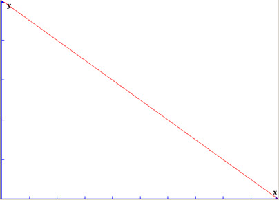
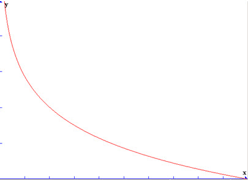
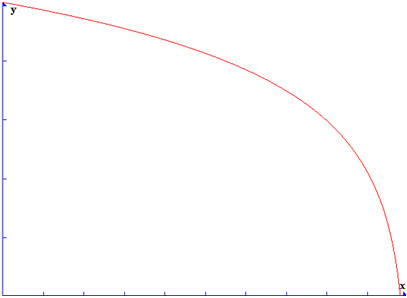
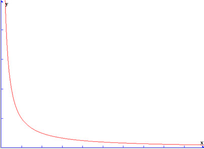
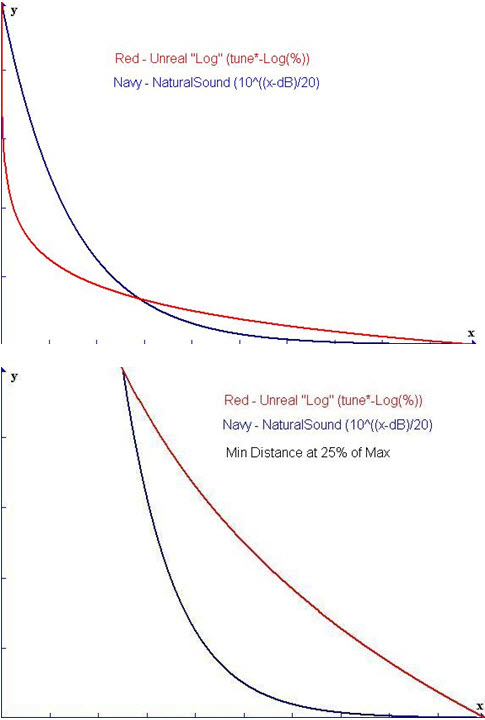
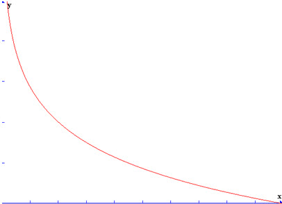
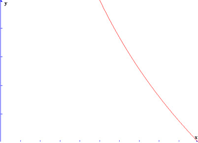
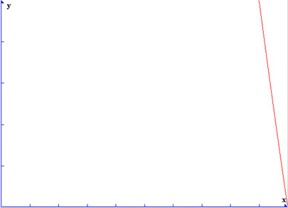

Distance Model Attenuation
Overview
Attenuation is essentially the ability of a sound to lower in volume as the player moves away from it. It works using two radii: MinRadius and MaxRadius. As you move from the sound’s origin through the MinRadius, volume of the sound is at 100%. As you pass between the MinRadius and the MaxRadius, the volume linearly fades between 100% and silence. The rate at which this fade occurs is based on the DistanceModel property, which provides several types of falloff curve to control the volume in-between the radii. Once you pass outside the MaxRadius, you’re outside the limit of the sound and hear only silence.
Here is a list and description of the available DistanceModel Attenuation curves.
In all of the following graphs, The Y axis is volume, the X axis is distance. MinRadius is at the origin of the X axis, and MaxRadius is located at x at the right edge of the X axis.
ATTENUATION_Linear
This attenuation model is a 1/1 reduction in volume over distance. Here is the graph:

Use case: Good for general looping ambience and low-detail background sounds that don't need tight 3d falloff settings. Also good for crossfading large radius ambient sounds.
ATTENUATION_Logarithmic
This attenuation model is a logarithmic reduction in volume over distance. Here is the graph:

Use case: Good for sounds that need more exact 3d positionalization. Also good for making sounds 'pop' at a close distance; good for incoming missiles and projectiles as well.
ATTENUATION_LogReverse
This attenuation model is a reverse logarithmic reduction in volume over distance. Here is the graph:

Use case: Useful as a layer in weapons or other sounds that need to be loud up to their MaxRadius.
ATTENUATION_Inverse
This attenuation model is an extremely steep falloff curve, using the equation:
( UsedMaxRadius / UsedMinRadius ) * ( 0.02 / ( Distance / UsedMaxRadius ) );

Use case: Good for 3d sounds that are pinpoint loud by the MinRadius but need to be present from a distance.
ATTENUATION_NaturalSound
The NaturalSound attenuation model is a more 'realistic' falloff model that tries to take into account how sounds are heard in an environment.

Use case: Good for fires or other point-interest or high frequency content that the logarithmic attenuation doesn't feel 'right' for a sound's falloff.
Example of several Min/Max settings for ATTENUATION_Logarithmic
Here’s an example of how the MinDistance/MaxDistance Ratio changes the graph for ATTENUATION_Logarithmic:
Min 0/Max 1000:

Min 100/Max 1000:

Min 500/Max 1000:
Min 900/Max 1000:

Important!
You are viewing documentation for the Unreal Development Kit (UDK).
If you are looking for the Unreal Engine 4 documentation, please visit the Unreal Engine 4 Documentation site.